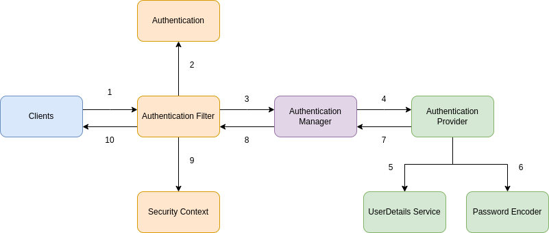

Authentication Provider#
Authentication Provider Introduction#
Authentication Provideris the component that leverages the UserDetailsService and PasswordEncoder to perform the authentication. This is a place where all your business logic will be implemented. The logic related to your security like how do you validate username and password.

- The
AuthenticationProviderin Spring Security takes care of the authentication logic. The default implementation of theAuthenticationProviderdelegates the responsibility of finding the user in the system to aUserDetailsServiceandPasswordEncoderfor password validation. But if we have a custom authentication requirement that is not fulfilled by Spring Security framework then we can build our own authentication logic by implementing theAuthenticationProviderinterface. - In some special case, you will need to create a custom
AuthenticationProvidersuch as you have a spring application service for your back-end(BE) side, but there are many client applications which is using your BE application and they they are using many different type of authentication. Ex: some of them are using username/password authentication with BCrypt, other are using JWT Authentication or you have an application that is using FaceId and theAuthenticationProviderby default can't support you. So we have to create customAuthenticationProviderfor supporting these types of user authentication.
Authentication Provider Definition#
- If you the class
AuthenticationProviderin the Spring Security then you can see it is an interface which contains 2 methods:authenticateandsupport.
/*
* Copyright 2004, 2005, 2006 Acegi Technology Pty Limited
*
* Licensed under the Apache License, Version 2.0 (the "License");
* you may not use this file except in compliance with the License.
* You may obtain a copy of the License at
*
* https://www.apache.org/licenses/LICENSE-2.0
*
* Unless required by applicable law or agreed to in writing, software
* distributed under the License is distributed on an "AS IS" BASIS,
* WITHOUT WARRANTIES OR CONDITIONS OF ANY KIND, either express or implied.
* See the License for the specific language governing permissions and
* limitations under the License.
*/
package org.springframework.security.authentication;
import org.springframework.security.core.Authentication;
import org.springframework.security.core.AuthenticationException;
/**
* Indicates a class can process a specific
* {@link org.springframework.security.core.Authentication} implementation.
*
* @author Ben Alex
*/
public interface AuthenticationProvider {
/**
* Performs authentication with the same contract as
* {@link org.springframework.security.authentication.AuthenticationManager#authenticate(Authentication)}
* .
* @param authentication the authentication request object.
* @return a fully authenticated object including credentials. May return
* <code>null</code> if the <code>AuthenticationProvider</code> is unable to support
* authentication of the passed <code>Authentication</code> object. In such a case,
* the next <code>AuthenticationProvider</code> that supports the presented
* <code>Authentication</code> class will be tried.
* @throws AuthenticationException if authentication fails.
*/
Authentication authenticate(Authentication authentication) throws AuthenticationException;
/**
* Returns <code>true</code> if this <Code>AuthenticationProvider</code> supports the
* indicated <Code>Authentication</code> object.
* <p>
* Returning <code>true</code> does not guarantee an
* <code>AuthenticationProvider</code> will be able to authenticate the presented
* instance of the <code>Authentication</code> class. It simply indicates it can
* support closer evaluation of it. An <code>AuthenticationProvider</code> can still
* return <code>null</code> from the {@link #authenticate(Authentication)} method to
* indicate another <code>AuthenticationProvider</code> should be tried.
* </p>
* <p>
* Selection of an <code>AuthenticationProvider</code> capable of performing
* authentication is conducted at runtime the <code>ProviderManager</code>.
* </p>
* @param authentication
* @return <code>true</code> if the implementation can more closely evaluate the
* <code>Authentication</code> class presented
*/
boolean supports(Class<?> authentication);
}
- The
authenticate()method received anAuthenticationobject as a parameter and returns and Authentication object as well. We implement theauthenticate()method to define the authentication logic. - The second method in the
AuthenticationProviderinterface issupports(Class<?> authentication). You will implement this method to return true if the currentAuthenticationProvidersupports the type provided as theAuthenticationobject. This method will be used when you have many type of authentication in your application like username/password authentication with BCrypt, JWT authentication or FaceId authentication. - Spring Security framework provide a default implementation of the
AuthenticationProvider. It is theDaoAuthenticationProviderwhich extends theAbstractUserDetailsAuthenticationProvider.
/*
* Copyright 2004, 2005, 2006 Acegi Technology Pty Limited
*
* Licensed under the Apache License, Version 2.0 (the "License");
* you may not use this file except in compliance with the License.
* You may obtain a copy of the License at
*
* https://www.apache.org/licenses/LICENSE-2.0
*
* Unless required by applicable law or agreed to in writing, software
* distributed under the License is distributed on an "AS IS" BASIS,
* WITHOUT WARRANTIES OR CONDITIONS OF ANY KIND, either express or implied.
* See the License for the specific language governing permissions and
* limitations under the License.
*/
package org.springframework.security.authentication.dao;
import org.springframework.security.authentication.AuthenticationProvider;
import org.springframework.security.authentication.BadCredentialsException;
import org.springframework.security.authentication.InternalAuthenticationServiceException;
import org.springframework.security.authentication.UsernamePasswordAuthenticationToken;
import org.springframework.security.core.Authentication;
import org.springframework.security.core.AuthenticationException;
import org.springframework.security.core.userdetails.UserDetails;
import org.springframework.security.core.userdetails.UserDetailsPasswordService;
import org.springframework.security.core.userdetails.UserDetailsService;
import org.springframework.security.core.userdetails.UsernameNotFoundException;
import org.springframework.security.crypto.factory.PasswordEncoderFactories;
import org.springframework.security.crypto.password.PasswordEncoder;
import org.springframework.util.Assert;
/**
* An {@link AuthenticationProvider} implementation that retrieves user details from a
* {@link UserDetailsService}.
*
* @author Ben Alex
* @author Rob Winch
*/
public class DaoAuthenticationProvider extends AbstractUserDetailsAuthenticationProvider {
/**
* The plaintext password used to perform PasswordEncoder#matches(CharSequence,
* String)} on when the user is not found to avoid SEC-2056.
*/
private static final String USER_NOT_FOUND_PASSWORD = "userNotFoundPassword";
private PasswordEncoder passwordEncoder;
/**
* The password used to perform {@link PasswordEncoder#matches(CharSequence, String)}
* on when the user is not found to avoid SEC-2056. This is necessary, because some
* {@link PasswordEncoder} implementations will short circuit if the password is not
* in a valid format.
*/
private volatile String userNotFoundEncodedPassword;
private UserDetailsService userDetailsService;
private UserDetailsPasswordService userDetailsPasswordService;
public DaoAuthenticationProvider() {
setPasswordEncoder(PasswordEncoderFactories.createDelegatingPasswordEncoder());
}
@Override
@SuppressWarnings("deprecation")
protected void additionalAuthenticationChecks(UserDetails userDetails,
UsernamePasswordAuthenticationToken authentication) throws AuthenticationException {
if (authentication.getCredentials() == null) {
this.logger.debug("Failed to authenticate since no credentials provided");
throw new BadCredentialsException(this.messages
.getMessage("AbstractUserDetailsAuthenticationProvider.badCredentials", "Bad credentials"));
}
String presentedPassword = authentication.getCredentials().toString();
if (!this.passwordEncoder.matches(presentedPassword, userDetails.getPassword())) {
this.logger.debug("Failed to authenticate since password does not match stored value");
throw new BadCredentialsException(this.messages
.getMessage("AbstractUserDetailsAuthenticationProvider.badCredentials", "Bad credentials"));
}
}
@Override
protected void doAfterPropertiesSet() {
Assert.notNull(this.userDetailsService, "A UserDetailsService must be set");
}
@Override
protected final UserDetails retrieveUser(String username, UsernamePasswordAuthenticationToken authentication)
throws AuthenticationException {
prepareTimingAttackProtection();
try {
UserDetails loadedUser = this.getUserDetailsService().loadUserByUsername(username);
if (loadedUser == null) {
throw new InternalAuthenticationServiceException(
"UserDetailsService returned null, which is an interface contract violation");
}
return loadedUser;
}
catch (UsernameNotFoundException ex) {
mitigateAgainstTimingAttack(authentication);
throw ex;
}
catch (InternalAuthenticationServiceException ex) {
throw ex;
}
catch (Exception ex) {
throw new InternalAuthenticationServiceException(ex.getMessage(), ex);
}
}
@Override
protected Authentication createSuccessAuthentication(Object principal, Authentication authentication,
UserDetails user) {
boolean upgradeEncoding = this.userDetailsPasswordService != null
&& this.passwordEncoder.upgradeEncoding(user.getPassword());
if (upgradeEncoding) {
String presentedPassword = authentication.getCredentials().toString();
String newPassword = this.passwordEncoder.encode(presentedPassword);
user = this.userDetailsPasswordService.updatePassword(user, newPassword);
}
return super.createSuccessAuthentication(principal, authentication, user);
}
private void prepareTimingAttackProtection() {
if (this.userNotFoundEncodedPassword == null) {
this.userNotFoundEncodedPassword = this.passwordEncoder.encode(USER_NOT_FOUND_PASSWORD);
}
}
private void mitigateAgainstTimingAttack(UsernamePasswordAuthenticationToken authentication) {
if (authentication.getCredentials() != null) {
String presentedPassword = authentication.getCredentials().toString();
this.passwordEncoder.matches(presentedPassword, this.userNotFoundEncodedPassword);
}
}
/**
* Sets the PasswordEncoder instance to be used to encode and validate passwords. If
* not set, the password will be compared using
* {@link PasswordEncoderFactories#createDelegatingPasswordEncoder()}
* @param passwordEncoder must be an instance of one of the {@code PasswordEncoder}
* types.
*/
public void setPasswordEncoder(PasswordEncoder passwordEncoder) {
Assert.notNull(passwordEncoder, "passwordEncoder cannot be null");
this.passwordEncoder = passwordEncoder;
this.userNotFoundEncodedPassword = null;
}
protected PasswordEncoder getPasswordEncoder() {
return this.passwordEncoder;
}
public void setUserDetailsService(UserDetailsService userDetailsService) {
this.userDetailsService = userDetailsService;
}
protected UserDetailsService getUserDetailsService() {
return this.userDetailsService;
}
public void setUserDetailsPasswordService(UserDetailsPasswordService userDetailsPasswordService) {
this.userDetailsPasswordService = userDetailsPasswordService;
}
}
- In the
AbstractUserDetailsAuthenticationProvideryou can see the methodauthenticate()this is the method that Authentication Manager will call to authenticate.
/*
* Copyright 2004, 2005, 2006 Acegi Technology Pty Limited
*
* Licensed under the Apache License, Version 2.0 (the "License");
* you may not use this file except in compliance with the License.
* You may obtain a copy of the License at
*
* https://www.apache.org/licenses/LICENSE-2.0
*
* Unless required by applicable law or agreed to in writing, software
* distributed under the License is distributed on an "AS IS" BASIS,
* WITHOUT WARRANTIES OR CONDITIONS OF ANY KIND, either express or implied.
* See the License for the specific language governing permissions and
* limitations under the License.
*/
package org.springframework.security.authentication.dao;
import org.apache.commons.logging.Log;
import org.apache.commons.logging.LogFactory;
import org.springframework.beans.factory.InitializingBean;
import org.springframework.context.MessageSource;
import org.springframework.context.MessageSourceAware;
import org.springframework.context.support.MessageSourceAccessor;
import org.springframework.security.authentication.AccountExpiredException;
import org.springframework.security.authentication.AuthenticationProvider;
import org.springframework.security.authentication.BadCredentialsException;
import org.springframework.security.authentication.CredentialsExpiredException;
import org.springframework.security.authentication.DisabledException;
import org.springframework.security.authentication.LockedException;
import org.springframework.security.authentication.UsernamePasswordAuthenticationToken;
import org.springframework.security.core.Authentication;
import org.springframework.security.core.AuthenticationException;
import org.springframework.security.core.SpringSecurityMessageSource;
import org.springframework.security.core.authority.mapping.GrantedAuthoritiesMapper;
import org.springframework.security.core.authority.mapping.NullAuthoritiesMapper;
import org.springframework.security.core.userdetails.UserCache;
import org.springframework.security.core.userdetails.UserDetails;
import org.springframework.security.core.userdetails.UserDetailsChecker;
import org.springframework.security.core.userdetails.UserDetailsService;
import org.springframework.security.core.userdetails.UsernameNotFoundException;
import org.springframework.security.core.userdetails.cache.NullUserCache;
import org.springframework.util.Assert;
/**
* A base {@link AuthenticationProvider} that allows subclasses to override and work with
* {@link org.springframework.security.core.userdetails.UserDetails} objects. The class is
* designed to respond to {@link UsernamePasswordAuthenticationToken} authentication
* requests.
*
* <p>
* Upon successful validation, a <code>UsernamePasswordAuthenticationToken</code> will be
* created and returned to the caller. The token will include as its principal either a
* <code>String</code> representation of the username, or the {@link UserDetails} that was
* returned from the authentication repository. Using <code>String</code> is appropriate
* if a container adapter is being used, as it expects <code>String</code> representations
* of the username. Using <code>UserDetails</code> is appropriate if you require access to
* additional properties of the authenticated user, such as email addresses,
* human-friendly names etc. As container adapters are not recommended to be used, and
* <code>UserDetails</code> implementations provide additional flexibility, by default a
* <code>UserDetails</code> is returned. To override this default, set the
* {@link #setForcePrincipalAsString} to <code>true</code>.
* <p>
* Caching is handled by storing the <code>UserDetails</code> object being placed in the
* {@link UserCache}. This ensures that subsequent requests with the same username can be
* validated without needing to query the {@link UserDetailsService}. It should be noted
* that if a user appears to present an incorrect password, the {@link UserDetailsService}
* will be queried to confirm the most up-to-date password was used for comparison.
* Caching is only likely to be required for stateless applications. In a normal web
* application, for example, the <tt>SecurityContext</tt> is stored in the user's session
* and the user isn't reauthenticated on each request. The default cache implementation is
* therefore {@link NullUserCache}.
*
* @author Ben Alex
*/
public abstract class AbstractUserDetailsAuthenticationProvider
implements AuthenticationProvider, InitializingBean, MessageSourceAware {
protected final Log logger = LogFactory.getLog(getClass());
protected MessageSourceAccessor messages = SpringSecurityMessageSource.getAccessor();
private UserCache userCache = new NullUserCache();
private boolean forcePrincipalAsString = false;
protected boolean hideUserNotFoundExceptions = true;
private UserDetailsChecker preAuthenticationChecks = new DefaultPreAuthenticationChecks();
private UserDetailsChecker postAuthenticationChecks = new DefaultPostAuthenticationChecks();
private GrantedAuthoritiesMapper authoritiesMapper = new NullAuthoritiesMapper();
/**
* Allows subclasses to perform any additional checks of a returned (or cached)
* <code>UserDetails</code> for a given authentication request. Generally a subclass
* will at least compare the {@link Authentication#getCredentials()} with a
* {@link UserDetails#getPassword()}. If custom logic is needed to compare additional
* properties of <code>UserDetails</code> and/or
* <code>UsernamePasswordAuthenticationToken</code>, these should also appear in this
* method.
* @param userDetails as retrieved from the
* {@link #retrieveUser(String, UsernamePasswordAuthenticationToken)} or
* <code>UserCache</code>
* @param authentication the current request that needs to be authenticated
* @throws AuthenticationException AuthenticationException if the credentials could
* not be validated (generally a <code>BadCredentialsException</code>, an
* <code>AuthenticationServiceException</code>)
*/
protected abstract void additionalAuthenticationChecks(UserDetails userDetails,
UsernamePasswordAuthenticationToken authentication) throws AuthenticationException;
@Override
public final void afterPropertiesSet() throws Exception {
Assert.notNull(this.userCache, "A user cache must be set");
Assert.notNull(this.messages, "A message source must be set");
doAfterPropertiesSet();
}
@Override
public Authentication authenticate(Authentication authentication) throws AuthenticationException {
Assert.isInstanceOf(UsernamePasswordAuthenticationToken.class, authentication,
() -> this.messages.getMessage("AbstractUserDetailsAuthenticationProvider.onlySupports",
"Only UsernamePasswordAuthenticationToken is supported"));
String username = determineUsername(authentication);
boolean cacheWasUsed = true;
UserDetails user = this.userCache.getUserFromCache(username);
if (user == null) {
cacheWasUsed = false;
try {
user = retrieveUser(username, (UsernamePasswordAuthenticationToken) authentication);
}
catch (UsernameNotFoundException ex) {
this.logger.debug("Failed to find user '" + username + "'");
if (!this.hideUserNotFoundExceptions) {
throw ex;
}
throw new BadCredentialsException(this.messages
.getMessage("AbstractUserDetailsAuthenticationProvider.badCredentials", "Bad credentials"));
}
Assert.notNull(user, "retrieveUser returned null - a violation of the interface contract");
}
try {
this.preAuthenticationChecks.check(user);
additionalAuthenticationChecks(user, (UsernamePasswordAuthenticationToken) authentication);
}
catch (AuthenticationException ex) {
if (!cacheWasUsed) {
throw ex;
}
// There was a problem, so try again after checking
// we're using latest data (i.e. not from the cache)
cacheWasUsed = false;
user = retrieveUser(username, (UsernamePasswordAuthenticationToken) authentication);
this.preAuthenticationChecks.check(user);
additionalAuthenticationChecks(user, (UsernamePasswordAuthenticationToken) authentication);
}
this.postAuthenticationChecks.check(user);
if (!cacheWasUsed) {
this.userCache.putUserInCache(user);
}
Object principalToReturn = user;
if (this.forcePrincipalAsString) {
principalToReturn = user.getUsername();
}
return createSuccessAuthentication(principalToReturn, authentication, user);
}
private String determineUsername(Authentication authentication) {
return (authentication.getPrincipal() == null) ? "NONE_PROVIDED" : authentication.getName();
}
/**
* Creates a successful {@link Authentication} object.
* <p>
* Protected so subclasses can override.
* </p>
* <p>
* Subclasses will usually store the original credentials the user supplied (not
* salted or encoded passwords) in the returned <code>Authentication</code> object.
* </p>
* @param principal that should be the principal in the returned object (defined by
* the {@link #isForcePrincipalAsString()} method)
* @param authentication that was presented to the provider for validation
* @param user that was loaded by the implementation
* @return the successful authentication token
*/
protected Authentication createSuccessAuthentication(Object principal, Authentication authentication,
UserDetails user) {
// Ensure we return the original credentials the user supplied,
// so subsequent attempts are successful even with encoded passwords.
// Also ensure we return the original getDetails(), so that future
// authentication events after cache expiry contain the details
UsernamePasswordAuthenticationToken result = new UsernamePasswordAuthenticationToken(principal,
authentication.getCredentials(), this.authoritiesMapper.mapAuthorities(user.getAuthorities()));
result.setDetails(authentication.getDetails());
this.logger.debug("Authenticated user");
return result;
}
protected void doAfterPropertiesSet() throws Exception {
}
public UserCache getUserCache() {
return this.userCache;
}
public boolean isForcePrincipalAsString() {
return this.forcePrincipalAsString;
}
public boolean isHideUserNotFoundExceptions() {
return this.hideUserNotFoundExceptions;
}
/**
* Allows subclasses to actually retrieve the <code>UserDetails</code> from an
* implementation-specific location, with the option of throwing an
* <code>AuthenticationException</code> immediately if the presented credentials are
* incorrect (this is especially useful if it is necessary to bind to a resource as
* the user in order to obtain or generate a <code>UserDetails</code>).
* <p>
* Subclasses are not required to perform any caching, as the
* <code>AbstractUserDetailsAuthenticationProvider</code> will by default cache the
* <code>UserDetails</code>. The caching of <code>UserDetails</code> does present
* additional complexity as this means subsequent requests that rely on the cache will
* need to still have their credentials validated, even if the correctness of
* credentials was assured by subclasses adopting a binding-based strategy in this
* method. Accordingly it is important that subclasses either disable caching (if they
* want to ensure that this method is the only method that is capable of
* authenticating a request, as no <code>UserDetails</code> will ever be cached) or
* ensure subclasses implement
* {@link #additionalAuthenticationChecks(UserDetails, UsernamePasswordAuthenticationToken)}
* to compare the credentials of a cached <code>UserDetails</code> with subsequent
* authentication requests.
* </p>
* <p>
* Most of the time subclasses will not perform credentials inspection in this method,
* instead performing it in
* {@link #additionalAuthenticationChecks(UserDetails, UsernamePasswordAuthenticationToken)}
* so that code related to credentials validation need not be duplicated across two
* methods.
* </p>
* @param username The username to retrieve
* @param authentication The authentication request, which subclasses <em>may</em>
* need to perform a binding-based retrieval of the <code>UserDetails</code>
* @return the user information (never <code>null</code> - instead an exception should
* the thrown)
* @throws AuthenticationException if the credentials could not be validated
* (generally a <code>BadCredentialsException</code>, an
* <code>AuthenticationServiceException</code> or
* <code>UsernameNotFoundException</code>)
*/
protected abstract UserDetails retrieveUser(String username, UsernamePasswordAuthenticationToken authentication)
throws AuthenticationException;
public void setForcePrincipalAsString(boolean forcePrincipalAsString) {
this.forcePrincipalAsString = forcePrincipalAsString;
}
/**
* By default the <code>AbstractUserDetailsAuthenticationProvider</code> throws a
* <code>BadCredentialsException</code> if a username is not found or the password is
* incorrect. Setting this property to <code>false</code> will cause
* <code>UsernameNotFoundException</code>s to be thrown instead for the former. Note
* this is considered less secure than throwing <code>BadCredentialsException</code>
* for both exceptions.
* @param hideUserNotFoundExceptions set to <code>false</code> if you wish
* <code>UsernameNotFoundException</code>s to be thrown instead of the non-specific
* <code>BadCredentialsException</code> (defaults to <code>true</code>)
*/
public void setHideUserNotFoundExceptions(boolean hideUserNotFoundExceptions) {
this.hideUserNotFoundExceptions = hideUserNotFoundExceptions;
}
@Override
public void setMessageSource(MessageSource messageSource) {
this.messages = new MessageSourceAccessor(messageSource);
}
public void setUserCache(UserCache userCache) {
this.userCache = userCache;
}
@Override
public boolean supports(Class<?> authentication) {
return (UsernamePasswordAuthenticationToken.class.isAssignableFrom(authentication));
}
protected UserDetailsChecker getPreAuthenticationChecks() {
return this.preAuthenticationChecks;
}
/**
* Sets the policy will be used to verify the status of the loaded
* <tt>UserDetails</tt> <em>before</em> validation of the credentials takes place.
* @param preAuthenticationChecks strategy to be invoked prior to authentication.
*/
public void setPreAuthenticationChecks(UserDetailsChecker preAuthenticationChecks) {
this.preAuthenticationChecks = preAuthenticationChecks;
}
protected UserDetailsChecker getPostAuthenticationChecks() {
return this.postAuthenticationChecks;
}
public void setPostAuthenticationChecks(UserDetailsChecker postAuthenticationChecks) {
this.postAuthenticationChecks = postAuthenticationChecks;
}
public void setAuthoritiesMapper(GrantedAuthoritiesMapper authoritiesMapper) {
this.authoritiesMapper = authoritiesMapper;
}
private class DefaultPreAuthenticationChecks implements UserDetailsChecker {
@Override
public void check(UserDetails user) {
if (!user.isAccountNonLocked()) {
AbstractUserDetailsAuthenticationProvider.this.logger
.debug("Failed to authenticate since user account is locked");
throw new LockedException(AbstractUserDetailsAuthenticationProvider.this.messages
.getMessage("AbstractUserDetailsAuthenticationProvider.locked", "User account is locked"));
}
if (!user.isEnabled()) {
AbstractUserDetailsAuthenticationProvider.this.logger
.debug("Failed to authenticate since user account is disabled");
throw new DisabledException(AbstractUserDetailsAuthenticationProvider.this.messages
.getMessage("AbstractUserDetailsAuthenticationProvider.disabled", "User is disabled"));
}
if (!user.isAccountNonExpired()) {
AbstractUserDetailsAuthenticationProvider.this.logger
.debug("Failed to authenticate since user account has expired");
throw new AccountExpiredException(AbstractUserDetailsAuthenticationProvider.this.messages
.getMessage("AbstractUserDetailsAuthenticationProvider.expired", "User account has expired"));
}
}
}
private class DefaultPostAuthenticationChecks implements UserDetailsChecker {
@Override
public void check(UserDetails user) {
if (!user.isCredentialsNonExpired()) {
AbstractUserDetailsAuthenticationProvider.this.logger
.debug("Failed to authenticate since user account credentials have expired");
throw new CredentialsExpiredException(AbstractUserDetailsAuthenticationProvider.this.messages
.getMessage("AbstractUserDetailsAuthenticationProvider.credentialsExpired",
"User credentials have expired"));
}
}
}
}
- Then if you look more deeply in the
authenticate()method, you can see it will build a success authentication object which isUsernamePasswordAuthenticationTokenby collecting information from inputauthenticationobject andUserDetails. - Next, if you look into the
support()or some first lines of methodauthenticate()method you would see that this provider is only support forAuthenticationtypeUsernamePasswordAuthenticationToken. So with otherAuthenticationtypes, the Authentication Manager will ignore this provider and move next to other provider so find the suitable one. - For now, you would see some references to Authentication Manager, UserDetails and Authentication. So let's check them in next sessions.
- Let's see an in example in Custom Authentication Provider.
Summary#
- We look tat what is the importance of
AuthenticationProviderinside Spring Security and scenarios where we can implement it to define our own custom authentication logic without adhering to theUserDetails,UserDetailsServiceandUserDetailsManagercontract. - Definition of
AuthenticationProviderwhich has 2 methodsauthenticate()andsupports(). - Definition of Authentication Manager which has 1 method
authenticate() - Definition of Authentication And Principal Interfaces and how
UserDetailswill be converted toAuthenticationobject with the defaultDaoAuthenticateionProviderprovided by Spring Security. - Finally we enhanced our application to have a custom
AuthenticationProviderand perform authentication without any issues.